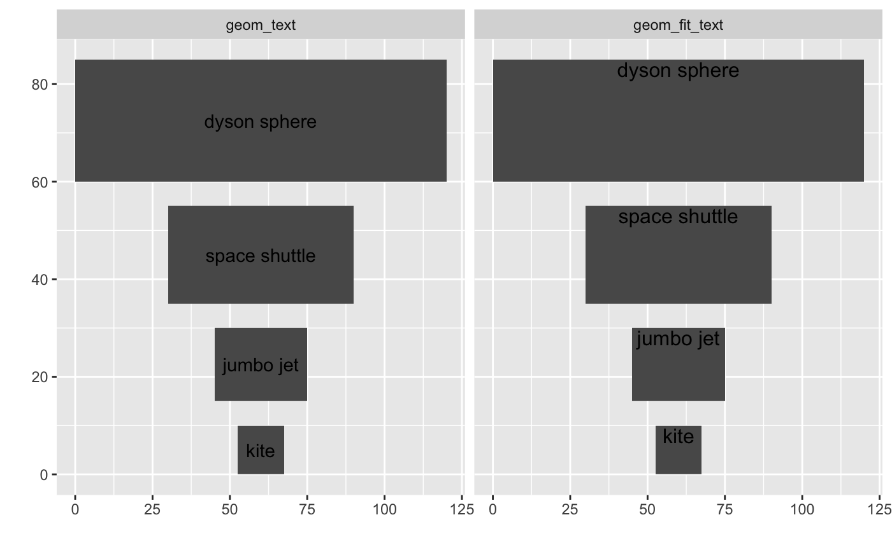
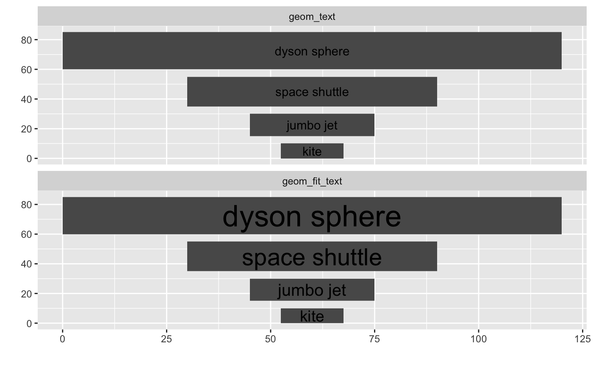
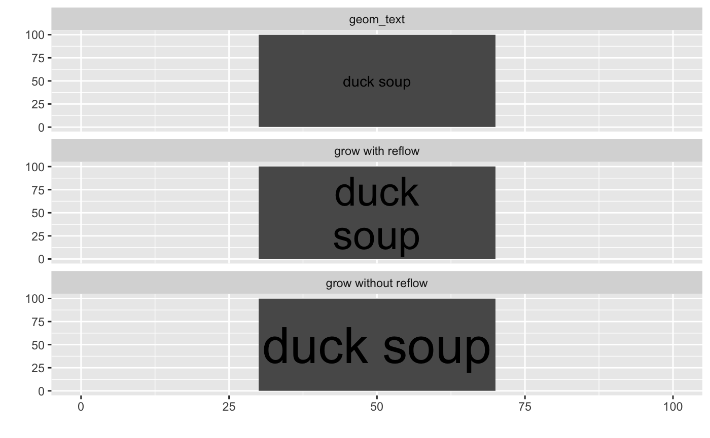
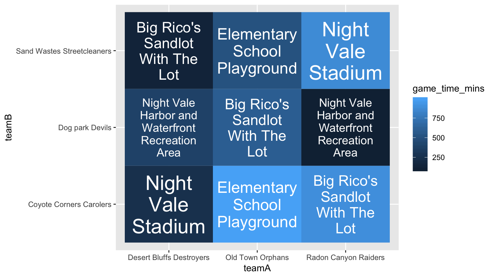

ggfittext provides a ggplot2 geom for fitting text inside a box

Installation
Install the release version of ggfittext from CRAN:
install.packages("ggfittext")If you want the development version, install it from GitHub:
devtools::install_github("wilkox/ggfittext")Fitting text inside a box
Sometimes you want to draw some text in a ggplot2 plot so that it fits inside a defined area. For example, you might want to label tiles in a heat map without letting the labels spill over into other tiles; or you might want to constrain some point labels to imaginary boxes so they don’t get too big. It’s possible to achieve this by manually fiddling with the text size, but this is both tedious and un-reproducible.
ggfittext provides a special geom called geom_fit_text() that automates fitting text inside a box. It works more or less like ggplot2::geom_text(), but provides some additional aesthetics and options that let you specify the box in which the text is to fit and how to make it fit.
library(ggplot2)
library(ggfittext)
flyers <- data.frame(
vehicle = rep(c("kite", "jumbo jet", "space shuttle", "dyson sphere"), 2),
xmin = rep(c(52.5, 45, 30, 0), 2),
xmax = rep(c(67.5, 75, 90, 120), 2),
ymin = rep(c(0, 15, 35, 60), 2),
ymax = rep(c(10, 30, 55, 85), 2),
geom = factor(c(rep("geom_text", 4), rep("geom_fit_text", 4)),
levels = c("geom_text", "geom_fit_text"))
)
ggplot(flyers, aes(label = vehicle, xmin = xmin, xmax = xmax, ymin = ymin,
ymax = ymax)) +
geom_rect() +
geom_text(data = subset(flyers, geom == "geom_text"),
aes(x = (xmin + xmax) / 2, y = (ymin + ymax) / 2)) +
geom_fit_text(data = subset(flyers, geom == "geom_fit_text")) +
facet_wrap( ~ geom) +
labs(x = "", y = "")
There are three different ways to define the box in which you want the text to be placed:
- On a continuous axis, you can use
xmin/xmaxand/orymin/ymaxaesthetics. - Alternatively on a continuous axis, you can define the horizontal and/or vertical centre of the box with
xand/oryrespectively, and fix the width and/or height of the box with thewidthand/orheightarguments. The values forwidthandheightshould begrid::unit()objects; if not, they will be assumed to use the native axis scale. - On a discrete (categorical) axis,
geom_fit_text()will automatically figure out the appropriate width or height. You can override this with thewidthorheightarguments if you want.
You can specify where in the box to place the text with the place argument, and a minimum point size for the text with the min.size argument. (Any text that would need to be smaller than min.size to fit the box will be hidden.)
ggplot(flyers, aes(label = vehicle, xmin = xmin, xmax = xmax, ymin = ymin,
ymax = ymax)) +
geom_rect() +
geom_text(data = subset(flyers, geom == "geom_text"),
aes(x = (xmin + xmax) / 2, y = (ymin + ymax) / 2)) +
geom_fit_text(data = subset(flyers, geom == "geom_fit_text"),
place = "top", min.size = 6) +
facet_wrap( ~ geom) +
labs(x = "", y = "")
Text can be placed in any corner (‘topleft’, ‘topright’, …) or at the midpoint of any side (‘bottom’, ‘left’, …), as well as the default ‘centre’.
Growing text
With the grow = TRUE argument, text will be made to fill the box completely, whether that requires growing or shrinking it.
ggplot(flyers, aes(label = vehicle, xmin = xmin, xmax = xmax, ymin = ymin,
ymax = ymax)) +
geom_rect() +
geom_text(data = subset(flyers, geom == "geom_text"),
aes(x = (xmin + xmax) / 2, y = (ymin + ymax) / 2)) +
geom_fit_text(data = subset(flyers, geom == "geom_fit_text"), grow = TRUE) +
facet_wrap( ~ geom, ncol = 1) +
labs(x = "", y = "")
Reflowing text
With the reflow = TRUE argument, text will be reflowed (wrapped) as needed to fit the box. Reflowing is preferred to shrinking; that is, if the text can be made to fit by reflowing it without shrinking it, it will be reflowed only.
poem <- data.frame(
text = rep(
"Whose words these are I think I know.\nHe would prefer that they reflow",
3
),
xmin = rep(10, 3),
xmax = rep(90, 3),
ymin = rep(10, 3),
ymax = rep(90, 3),
fit = c("geom_text", "without reflow", "with reflow")
)
ggplot(poem, aes(xmin = xmin, xmax = xmax, ymin = ymin, ymax = ymax,
label = text)) +
geom_rect() +
geom_text(
data = subset(poem, fit == "geom_text"),
aes(x = (xmin + xmax) / 2, y = (ymin + ymax) / 2)
) +
geom_fit_text(data = subset(poem, fit == "without reflow"), min.size = 0) +
geom_fit_text(data = subset(poem, fit == "with reflow"), reflow = TRUE,
min.size = 0) +
lims(x = c(0, 100), y = c(0, 100)) +
labs(x = "", y = "") +
facet_wrap(~ fit)
Note that existing line breaks in the text are respected.
With both reflow = TRUE and grow = TRUE, the text will be reflowed to a form that best matches the aspect ratio of the box, then made to fill the box whether that requires shrinking it or growing it.
film <- data.frame(
text = rep("duck soup", 3),
xmin = rep(30, 3),
xmax = rep(70, 3),
ymin = rep(0, 3),
ymax = rep(100, 3),
fit = c("geom_text", "grow without reflow", "grow with reflow")
)
ggplot(film, aes(xmin = xmin, xmax = xmax, ymin = ymin, ymax = ymax,
label = text)) +
geom_rect() +
geom_text(
data = subset(film, fit == "geom_text"),
aes(x = (xmin + xmax) / 2, y = (ymin + ymax) / 2)
) +
geom_fit_text(data = subset(film, fit == "grow without reflow"), grow = TRUE) +
geom_fit_text(
data = subset(film, fit == "grow with reflow"),
grow = TRUE,
reflow = TRUE
) +
lims(x = c(0, 100), y = c(0, 100)) +
labs(x = "", y = "") +
facet_wrap(~ fit, ncol = 1)
Example: a heatmap
tournament <- data.frame(
teamA = rep(c("Radon Canyon Raiders", "Desert Bluffs Destroyers",
"Old Town Orphans"), 3),
teamB = c(rep("Coyote Corners Carolers", 3),
rep("Sand Wastes Streetcleaners", 3),
rep("Dog park Devils", 3)),
venue = sample(c("Night Vale Stadium", "Big Rico's Sandlot With The Lot",
"Elementary School Playground",
"Night Vale Harbor and Waterfront Recreation Area"),
9, replace = TRUE),
game_time_mins = sample(999, 9)
)
ggplot(tournament, aes(x = teamA, y = teamB, fill = game_time_mins,
label = venue)) +
geom_tile() +
geom_fit_text(reflow = TRUE, grow = TRUE, colour = "white")